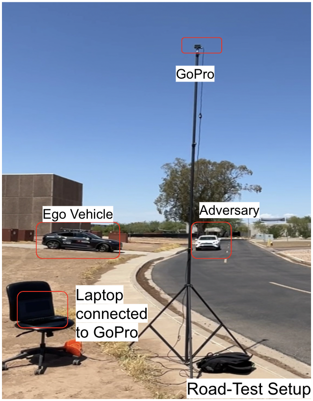

Vehicle-to-Infrastructure (V2I) Based 3D Object Detection and Sensor Fusion
Summary: This work addresses the occlusion problem in autonomous driving by leveraging Road Side Units (RSU). By integrating infrastructure sensors, the system can see through obstacles like buildings or large vehicles, effectively extending the perception horizon beyond the line of sight of the ego vehicle.

- Developed an end to end sensor fusion perception stack by identifying gaps in existing cooperative perception and implementing a real time late fusion framework in Python and ROS2 for 3D object detection, merging onboard LiDAR with infrastructure camera data.
- Engineered a dual update Kalman Filter to fuse asynchronous LiDAR and camera data, successfully overcoming network delays and noise to deliver smoother multi sensor state estimation.
- Extended the detection range by 252% and reduced RMSE by 43%.
- Created and executed four different urban traffic scenarios using CARLA and ScenarioRunner to conduct validation of the proposed pipeline.
- Conducted real-world validation using the Ford Mach-E Research Vehicle.